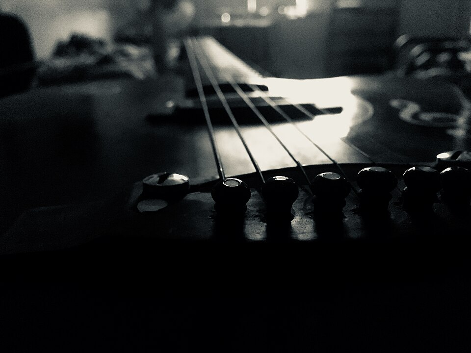
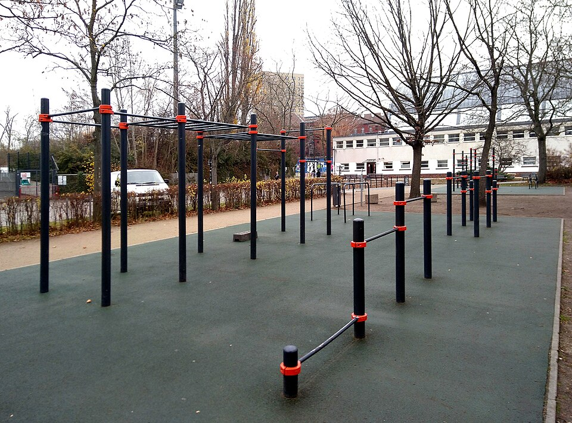
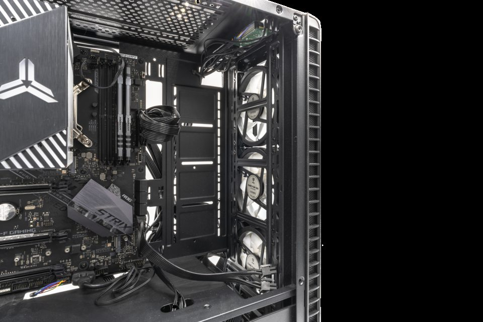

Music
Guitar and playlists
I play acoustic and electric guitar. I listen to Laufey, HiVi!, Metallica, Slipknot, and music from Bocchi the Rock!
Outside school and projects
Music, movement, games, and stories all give me a different way to reset, practice, or get curious.

Music
I play acoustic and electric guitar. I listen to Laufey, HiVi!, Metallica, Slipknot, and music from Bocchi the Rock!

Movement
I enjoy calisthenics, weightlifting, badminton, futsal, soccer, basketball, and volleyball.

Games
I like tactical shooters and simulation games, plus Minecraft and Roblox. I also enjoy building and managing Minecraft servers with friends.
Stories and making
I enjoy anime, manga, world-building, and video editing. Favorites include Re:Zero, Overlord, and The Eminence in Shadow.
Languages and tools
I speak Indonesian and English, and am learning Japanese and Mandarin. I like finding small projects for new technology and creative tools.